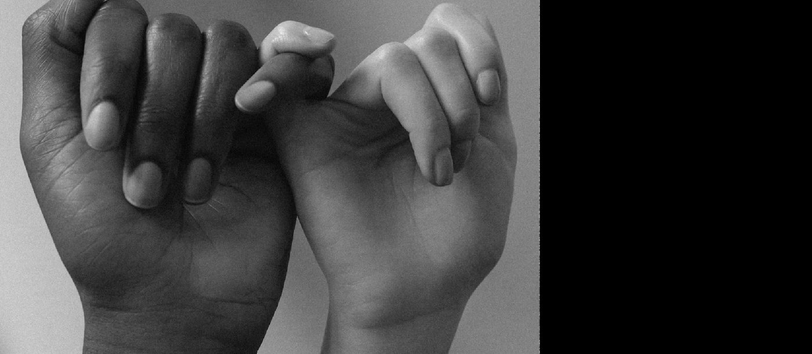

נרגעתם. עכשיו השאלה שהורסת יותר זוגות מכל ריב.

אף אחד לא בא ואומר ״בואי ננהל עכשיו שיחת תיקון״. הזמנה לתיקון נשמעת אחרת לגמרי.
״רוצה קפה?״
בדיחה שאף אחד לא צחק ממנה
יד על הכתף בדרך למטבח
״הילד שאל עליך״
ומתחת לכל אחת מהן יושבת אותה שאלה: אפשר כבר להתקרב אלייך?
גוטמן · Bids for Connection. ואחרי ריב, גם Bids for Repair.
שולם שולם לעולם. ברוגז ברוגז אף פעם.
ומגישים זרת.
היה נוסח. הוא היה קבוע, הוא היה משותף, ושנינו ידענו מה הוא אומר. לא היה צריך להסביר, לא היה צריך לבדוק אם זה נחשב. מה קרה לנו מאז?
לדעת לשלוח הזמנה לתיקון. ולדעת לזהות כשמזמינים אותנו.
ורובנו נופלים על השנייה. כי אנחנו דוחים המון הזמנות בלי לשים לב שאלה היו הזמנות.
״רוצה קפה?״ ← ״מה קשור קפה עכשיו?״
מגע ← ״אל תיגע בי.״
ניסיון להצחיק ← ״זה לא מצחיק.״
״מה קרה?״ ← ״באמת?! אתה לא יודע מה קרה?!״
זה קורה כי אנחנו מחזיקים בראש תמונה של איך תיקון אמור להיראות. הוא יבוא ראשון. יגיד בדיוק את המילים. יבין למה נפגעתי. ובלי שאבקש. ואם הוא לא הגיע בצורה הזאת, אנחנו אומרים לעצמנו: זה לא נחשב.
גם כשעוד כואב, וגם בלי לדעת אם ייענו לו. זה הסיכון של מי שיוזם.
להיענות זה לא להסכים ולא לוותר. זה להגיד: ראיתי אותך, אני כאן.
יד מושטת שלא נענית כואבת יותר מהריב עצמו.
סמנו את מה שאתם באמת עושים. גם אם לא חשבתם על זה כעל הזמנה.
מתי הזמנה מגיעה אליי ואני לא סופר/ת אותה?
״הוא מטאטא מתחת לשטיח.״ זו פרשנות אחת, והיא אפשרית. ״אולי זו הדרך שלו להתקרב?״ זו פרשנות שנייה, והיא אפשרית בדיוק באותה מידה.
ההבדל ביניהן הוא לא באמת. ההבדל הוא במה שקורה אחריהן.
אפשר עדיין לא להיות מוכנים לתיקון, בלי לדחות את ההזמנה לתיקון.
״אני רואה שאתה מנסה להתקרב.״
״אני עדיין צריכה עוד קצת זמן.״
בלי החצי הראשון, זה נשמע כמו דחייה.
קחו את הדבר שכתבתם למעלה, זה שלא נחשב לכם. ותנו לו גרסה שנייה.
רגע. מה אתם מגדירים כיוזמה?
יכול להיות ששניכם יזמתם, ורק אחד מכם ספר את זה. את פתחת את השיחה. הוא הכין קפה, נגע, ישב לידך, שלח בדיחה.
אחד אחראי על הריכוך. השני על פתיחת השיחה. שניהם השתתפו בתיקון.
וכל עוד אף אחד לא ספר את זה ככה, שניהם יושבים באותו בית וחושבים בדיוק אותו דבר: ״אם באמת היה אכפת לו ממני, הוא היה בא.״ שניהם מחכים. אף אחד לא זז.
ואם אחרי הבדיקה הזאת מתברר שבאמת רק אחד שולח ורק אחד מקבל, אז זה כבר לא ריב על הכלים. זו שיחה על חוסר הדדיות, וצריך לקיים אותה בפני עצמה.
אחרי שספרתם גם את הריכוך, לא רק את פתיחת השיחה.
דמיינו דלת מחברת בחדר במלון. היא לא מבטיחה שנעבור דרכה. היא רק מבטיחה שאפשר.
לסגור נושא
להזמין את השני פנימה
המטרה היא לא לפתור את הקונפליקט. המטרה היא לפתוח שיחה שאפשר לתקן בתוכה.
ומתחת לכל משפט פתיחה יושבות שלוש שאלות שאף אחד לא אומר בקול:
״אתה שם?״
״אני עדיין חשובה לך?״
״אנחנו עדיין ביחד בתוך הדבר הזה?״
אפשר לפתוח שיחה גם כשעוד כועסים. צריך רק להגיד את זה.
וזה המשפט שמתאים למצב שבחרתם. שנו אותו למילים שלכם.